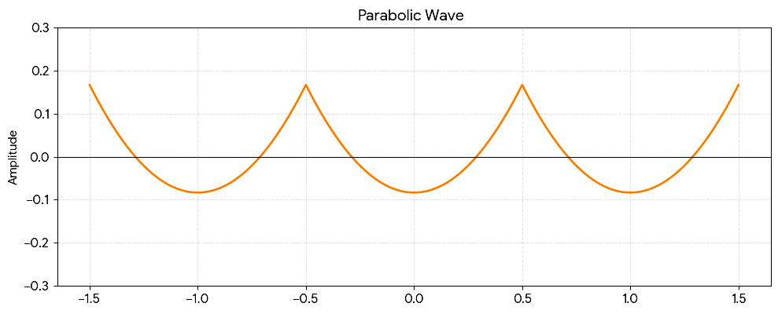

序章
本書の使い方
本書は、微分音の理論・知覚・実践を一望するためのリファレンスです。
全七部＋付録からなり、物理と知覚の土台（第Ⅰ部）から出発して、純正律の格子（第Ⅱ部）、Regular Temperament と MOS の数理（第Ⅲ部）、主役である31平均律（第Ⅳ部）、多彩な音律のアトラス（第Ⅴ部）、協和と不協和の科学の深部（第Ⅵ部）、そして制作の現場（第Ⅶ部）へと進みます。
二層構成 ── 直感と精密
微分音に関わる人の頭の中と、一般的な音楽家の理解の間には距離があります。本書はその距離を「章を分ける」のではなく、各節の内部に二つのレイヤーを積むことで埋めます。
以下に凡例を実物で示します。
琥珀色のこの枠が「直感レイヤー」です。各節の冒頭に置かれ、その節の内容をなるべく数式を使わす、日常の言葉で要約します。急いでいるとき・はじめて読むときは、この枠と音の出るウィジェットだけを辿っても一つの読書になるよう書かれています。
精密レイヤー ── 定義・数式・文献レベルの記述
精密レイヤー
藍色の枠が「精密レイヤー」です。定義、導出、数値、用語の由来など、正確さを要する内容はここに置かれます。見出しをクリックすると折りたたむことができます。初読では飛ばし、二周目で開く、という読み方を想定しています。
例：セントの定義 \( c = 1200 \log_2 (f_2/f_1) \)。
この二層の間に、通常の本文（どちらでもない地の文）が流れます。
地の文は「直感より正確に、精密より軽く」を目安に書かれています。
記法と単位のお約束
- 周波数比
基本的に 3/2, 5/4 のように分数で書きます。音程の合成は比の乗算、セントの加算に対応します（第Ⅰ部2）。 - セント
¢ で表します。1200¢＝オクターブ。数値は原則として小数第2〜3位までを示します。 - EDO（equal divisions of the octave）
オクターブの等分割を指し、12edo, 31edo のように書きます。日本語の「平均律」は文脈に応じて併用します。 - 音名
当面 12edo の慣用音名（A4 = 440 Hz）を方位磁針として使い、31平均律固有の音名・記譜は第Ⅲ部6と第Ⅳ部5で導入します。 - val・monzo
角括弧記法 ⟨ … ]・[ … ⟩ は第Ⅲ部で定義してから使用します。 - 訳語の方針
コミュニティで合意された日本語訳が定着していない専門用語（val, monzo, MOS, tempering out など）は無理に訳さず原語のまま用い、初出時に短い注を添えます。
音の出るページについて
本書の特徴は、概念をその場で鳴らして確かめられることです。
「♪」 の付いた枠（ウィジェット）にはボタンやスライダーがあり、クリックすると音が出ます。ブラウザの自動再生制限のため、音はページを開いただけでは鳴らず、最初のクリックで有効化されます。
ヘッドフォンまたはある程度のスピーカーでの試聴を推奨します（特に第Ⅰ部4の「粗さ」や第Ⅰ部5の聴き分けテストは、再生環境の影響を受けます）。
試聴の基準音色には、のこぎり波を積分して得られる放物線波（倍音振幅が 1/n² で減衰）を採用しています。倍音を十分に含みつつ高次が穏やかで、音域による音量差が出にくく、純正音程と調整された音程の比較に適しています。

読書経路
全体は依存関係の順（Ⅰ→Ⅶ）に並んでいますが、通読だけが読み方ではありません。
- 音楽家として：
Ⅰ（土台）→ Ⅳ（31平均律）→ Ⅶ（実践）。理論の背景が気になったら Ⅱ・Ⅲ に戻る。各節は直感レイヤーだけ拾えば速く進めます。 - 理論家として：
Ⅰ → Ⅱ → Ⅲ → Ⅴ → Ⅵ と積み上げ、Ⅳ を「すべての交差点」として味わう。精密レイヤーを開きながら深く理解できます。 - 実装者として：
Ⅰ → Ⅳ5（記譜・鍵盤）→ Ⅶ（Scala・MIDI・楽器）。調律ファイルの中身が知りたくなったら Ⅲ へ。
相互参照と用語集
本文中には、関連する他の節への相互参照が随所に置かれています。
（クリックでその節へ飛べます）
多くの概念は複数の部にまたがるため、初出の節と応用の節を行き来しながら読むと理解が深まります。サイドバーの検索窓からは、用語集（付録A）の項目をいつでも引けます。
未知の用語に出会ったら、まずここで意味を確かめてください。
本書の構成と方針
本書は第Ⅰ部から第Ⅶ部と付録A〜Cまでの全編で構成されています。
音の物理（Ⅰ）から純正律と格子（Ⅱ）、Regular Temperament Theory（Ⅲ）、31平均律の全貌（Ⅳ）、音律アトラス（Ⅴ）、響きの科学（Ⅵ）、そして制作の実践（Ⅶ）へ。すべての部がどこかで31平均律に合流します。
音律の同定・数値・固有名詞は、Xenharmonic Wiki 等の一次コミュニティ資料と照合したうえで記載しています（特に第Ⅳ・Ⅴ部）。
それでは、音の物理から魔導書の紐を解きましょう。